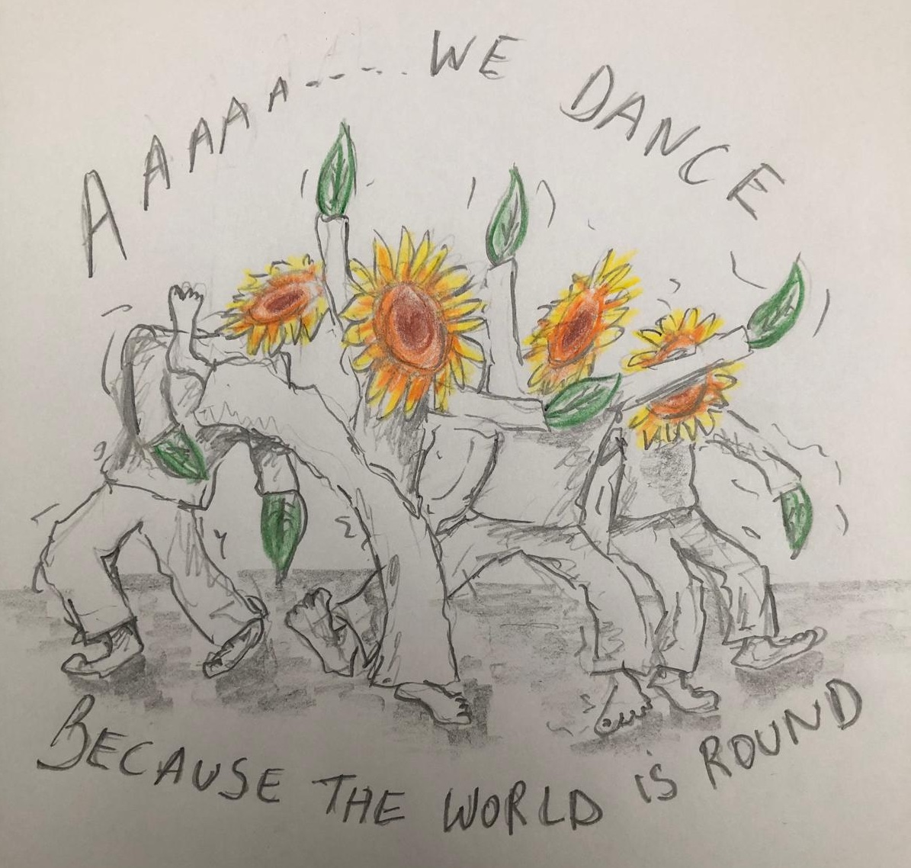

"Hey Fien en Lieven,
Amai, hoe diepgaand, jullie lessen.
Elke keer weer inzichten, elke keer zoveel te voelen, elke keer iets waardevols dat in beweging mag in mijn leven.
Dankjewel."
Louise

"Biodanza: Open armen, open hart... zie je mensen groeien als bloemen
om de bijen zoekend in dansende kruisbestuivingen.
Het "bloemen zijn" ontplooien zich telkens in nieuwe trillingen van het
lichaam. Te saam als een veld wilde bloemen, ontvankelijk voor gezoem en
gedans.
Zo eerlijk open alsof het hun nature altijd geweest is.
Dankbaar aan zij die uitnodigend aanreiken, het leven te genieten.
Aho"
Dirk
"Ik wil jou en alle andere mensen graag danken. Dank voor de openheid en liefde waarmee iedereen zich openstelde naar mij toe. Wat een gezellig warm nest met een pracht vogel die er zo zorgvuldig, haar prachtige vleugels warm over dekt. Dank aan jou en aan alle anderen. Ik was erg ontroerd toen ik de ongelooflijke mooie ontmoeting zag tussen jou met Tine. Woordeloos en o zo ontroerend mooi. Ook toen je mij zelf uitnodigde... uniek moment. Dank je wel."
anoniem"Ik ben heel dankbaar dat ik biodanza heb ontdekt , dankzij biodanza leer ik nog meer te luisteren naar mijn gevoel als mijn lichaam iets aangeeft en dat het ok is om je emotie's toe te laten 😪 en het even te doorvoelen en dan ook terug te leren stralen 😊😁 dat ik mezelf mag en kan zijn in het hier en nu en dat we onszelf niet hoeven weg te stoppen 🙏🌈🥰, het voelt aan als thuiskomen 🙏😇💞in een veilige bedding waar ik mij geborgen en gedragen voel van 💗tot💗en waar ik mijn grenzen mag durven aangeven op een subtiele en liefdevolle manier zonder woorden 🙏😇😘🌸🌻 We zijn Fien heel dankbaar dat zij ons die kans heeft en het ons leert dat het er allemaal mag zijn ...dit is voor mij als een kostbaar geschenk 💖en dat ik ook terug leer genieten van de kleine dingetjes in het leven waar mijn 💗blij van word 🌸🌻🌈💃💃 Ik voel aan mezelf dat ik zo gegroeid ben en nog verder zal groeien ..."
Liefdevolle knuffel Sabine 😘🤗
"Ik volgde de 3-delige zomerreeks met Fien en Lieven. Het was mijn eerste ervaring met Biodanza. Ik had er al veel over gehoord, maar nog nooit ervaren. En wat een ervaring! Het was een direct thuiskomen voor mij. Een veilige plek om het kind in mij volledig te laten zijn en naar buiten te laten komen zonder masker. Een plek om diepe verbinding te ervaren met mezelf en met anderen. Een plek om te voelen waar mijn eigen grenzen liggen en hoe ik de grenzen van anderen lees en respecteer. Dit alles onder de pure en openhartige begeleiding van Fien. Ze herinnert ons telkens wat de achtergrond van de oefening is en hoe dit weerspiegeld wordt in ons dagelijks leven. De muziekkeuzes zijn zalig! Voor mij is Biodanza, zelf-ontwikkeling in beweging, het doorvoelen en integreren van groeiprocessen en dit meenemen in je dagelijks leven!
Dank je Fien en Lieven!"
Sophie"Rond deze periode vorig jaar ben ik Biodanza beginnen volgen en ik heb er al zoveel aan gehad!
Begin 2022 zat ik in een heel intense emotionele en mentale crisis met angstaanvallen en een aanhoudende scherpe pijn aan m’n middenrif. Dat maakte dat gewoon de autorit naar de lessen al heel moeilijk was. De lessen zelf ervaarde ik in het begin ook als heel stresserend. Doorheen de covid-periode was ik het vertrouwen in andere mensen goed kwijtgeraakt. De aanhoudende en escalerende regels rond isolatie ervaarde ik als heel tegennatuurlijk. Dit gevoel botste sterk met hoe ik andere mensen zag reageren. Niemand leek de wereld te zien zoals ik. De situatie waarover ik spreek heeft voor mij een hoop andere dingen aan het licht gebracht die er altijd al waren, maar die ik onbewust onderdrukte.
Na een paar lessen voelde ik (ondanks de onzekerheid en stress) een enorm potentieel voor mijn eigen groei en genezing. De eerste les al vond ik het ongelofelijk hoe iedereen elkaar een knuffel gaf vóór de les, ook aan mij, en dat was zovéél betekenend. De groep waarin ik zit is ook enorm hecht en zeer warm naar elkaar toe. Ondertussen, een jaar later, heb ik zoveel bijzondere ervaringen gehad met die groep dat ik ze zelfs niet kan beginnen opsommen.
De grootse verandering ervaar ik buiten de lessen, in de echte wereld waar ik veel meer open sta voor nieuwe ontmoetingen en potentiële vriendschappen. In de lessen ervaar ik meer en meer hoe er iets gebeurt op het vlak van hoe we met elkaar communiceren op een lichamelijk niveau waarvan we ons niet bewust zijn. Die communicatie gaat rechtstreeks naar mijn diepste angsten en wonden via mijn lichaam. De genezing voel ik ook voornamelijk in mijn lichaam dat rustiger wordt waardoor mijn gedachten ook rustiger en authentieker worden (minder angstig). Ik ben ook enorm dankbaar voor de groep om de oefeningen en genezing mogelijk te maken. Veel van de positieve gevoelens gebeuren niet onmiddellijk in de les zelf maar voel ik pas na de les, soms een paar dagen later, buiten in de wereld. Het is een bijzonder fenomeen.
De Biodanza betekent ondertussen enorm veel voor mij en ben ik zo dankbaar dat Fien en Lieven de lessen organiseren en dat alle mensen meedoen met dezelfde intentie om te oefenen met elkaar in een veilige omgeving. Het heeft mijn zoveel geholpen het afgelopen jaar dat ik soms bijna niet kan geloven dat ik sta waar ik nu sta. En er is nog zoveel te leren en ik ben zeker dat ook hierin de Biodanza-groep mij veel zal helpen."
Brian
Dirk
"Dansen met Fien is als thuiskomen in een warm nest"
"Fien heeft een heel uitnodigende houding.
Zij is de eerste leraar in 42 jaar waarbij ik mezelf durf te zijn.
Ik durf te dansen, te schrijven en uit te spreken wat ik voel."
Lieve
"Wat was me dat weer een fantastische les!
Ik heb op een paar minuten tijd kunnen groeien uit een dissociatie naar
echt voelen en neerzetten van innerlijke kracht, me tonen...
en aanvaarden!!!
Dankjewel!!!"
Anoniem
"Lieve Fien, Wat fijn, bijzonder dat wij jou hebben gevonden 🙏 en ontmoet voor de biodanza💃. Wij (Laura, Sabine en Sharon) doen dit nu al meer of 1 jaar half ongeveer. Wij zijn samen in de biodanza 💃 gestapt, en wat is het prachtig en fijn om Fien te hebben als lerares van de biodanza🌈🙂🙏. Dankzij haar hebben we een heel fijne en zachte 💖 ervaring/manier met de biodanza. In 1 jaar half tijd dat wij biodanza doen bij Fien zijn wij echt gegroeid als mens. Biodanza is echt bijzonder🌈, mooi💖 en gewoon fantatisch😇💃 om te ervaren. Dank je wel Lieve Fien voor jou zachtheid, puurheid en hoe je met biodanza en in de Biodanza omgaat samen met ons (de groep)..."
Laura
"Ik zou Biodanza aan iedereen aanraden die onderweg is naar kern
zijn.
Ik deel graag 1 van mijn schrijfsels..."
Biodanza
Lichaam schrijft
Een sensueel gedicht Dat de gedachten verlicht
Emoties uitgebeeld zonder te verwoorden
Boosheid uit benen stampen, laten verdampen
Verdriet innig koesterend en vanuit het hart
Kindse en pure blijheid schaterlachend en uitbundig vieren
Tegemoet komen, traag gedragen, op schouders zacht laten rusten
Wiegende cirkel, aarde als ondergrond, mee zweven met de energie
Rust in verbinding met alles en iedereen, tijd staat even stil
Ciska
"Biodanza met Fien heeft mijn leven veranderd!
Fien biedt een veiligheid waardoor ik kon groeien in enkele lessen van
iemand die van zichzelf niet mocht bestaan naar iemand die zich durft
neerzetten in verbinding met mijn man, met vrienden, met vreemden, ... met
het leven.
Door te kijken naar Fien die de oefeningen voor toont, ben ik mijn eigen
vuur, vreugde, speelsheid, kracht en liefde gaan voelen.
Dankbaar kijk ik uit naar elke les, naar elke ontmoeting."
Maatje
"Biodanza is mogen en proberen; of liever oefenen om volledig jezelf
te zijn.
Om je ‘pure’ naar boven en buiten te laten komen.
Het is pure pracht en zo ook kracht.
Het is afstemmen op eender wie en ontmoeten en ontdekken wat nog dieper
of net ook niet eruit komt.
Vaak iets onverwachts die ontstaat door afstemming.
Een ander kan je helpen bij te leren over jezelf door o.a.
afstemming.
Het is heel bijzonder! Want met elk iemand ervaar je iets uniek.
Super interessant wat je voelt en wat daaruit kan gebeuren!
Ik ben super dankbaar dat ik de Biodanza heb leren kennen!
Het maakt mij sterker!
Dank u!"
Tine

Anoniem